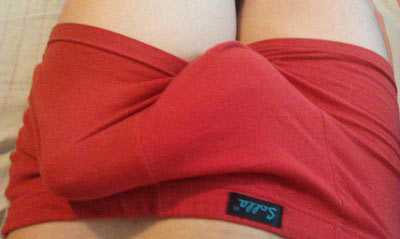

Potența sănătoasă chiar şi la 75 de ani este o normalitate fiziologică! Cum scăpăm de toate problemele erectile cu cel mai modern produs, odată pentru totdeauna!?
Pentru început, un pic de statistică: 7 din 10 bărbați cu vârsta de peste 35 de ani se confruntă periodic cu probleme de potenţă. Vorbim, bineînţeles, de pierderea parțială sau totală a erecției, de ejacularea prematură sau precoce, de scăderea excitabilității şi de imposibilitatea finalizării actului sexual ..
Impotența - o cauză a divorțurilor, certurilor şi infidelităţilor conjugale!
Bună ziua!
Astăzi, am decis să abordez un subiect cât se poate de delicat şi, în
acelaşi timp, foarte important - sănătatea bărbaţilor. Vreau să Vă spun că, în ultimul
timp, am primit o mulțime de întrebări privind mijloacele şi metodele moderne de restabilire
potenței.
În mod surprinzător, aceste întrebări au fost formulate mai ales de femei
interesate să-şi ajute soții sau parteneri afectaţi de această problemă intimă serioasă. Se ştie
doar că bărbaţii sunt foarte reţinuţi, când vine vorba de ceea ce ei consideră a fi o mare
ruşine şi o slăbiciune pentru ei, ca reprezentanţi ai sexului tare. Chiar și atunci când nevoia
de tratament devine o urgenţă evidentă, ei evită să se adreseze unui medic specialist, motivele
acestei atitudini regretabile şi iresponsabile ţinând de acelaşi vanitos şi păgubos orgoliu
masculin. Ei bine, eu vă înţeleg perfect, așa că voi încerca să vă explic cum puteţi să Vă
restabiliţi rapid și în deplină siguranță potenţa. Şi asta, fără să apelaţi la
medicul-specialst, la chimicale și lintervenţii chirurgicale costisitoare.
Din păcate, problemele erectile ale bărbaților apar acum mult mai devreme ca înainte. Astfel,"pistolul " bărbatului începe să se "gripeze" şi să dea "rateuri" încă de la vârsta de 35 de ani, iar uneori, chiar și la o vârstă mult mai tânără. Dacă aceste prime "semnale de alarmă" sunt ignorate, situaţia bărbatului va evolua treptat şi inexorabil spre forme mult mai grave de impotenţă. De regulă, bărbaţii încep să folosească Viagra și alte preparate de acest gen chiar după primele eşecuri sexuale, şi asta nu e bine deloc! Da, este perfect adevărat că Viagra şi alte preparate din această categorie asigură o erecţie suficient de puternică, dar asta numai pentru o perioadă scurtă de timp. Aceste preparate nu te scapă de problemele erectile pe termen lung, nici pe departe! Mai rău, cu timpul bărbatul își pierde toată încrederea în sine și nu mai poate face sex fără "pastila magică".

Sunt de mare notorietate poveştile unor vedete sau oameni de afaceri celebri, care, la o vârstă destul de înaintată, au amante focoase, ba chiar se şi căsătoresc cu fete mult mai tinere decât ei. Mai mult decât atât, în aceste cupluri insolite şi excesiv de mediatizate mai apar, uneori, şi copii perfect sănătoşi. Iar tinerele şi atât de fericitele lor mămici nu se sfiesc deloc să vorbească pe la televiziuni despre prestaţia şi performanţele soților lor în pat. Cum e posibil aşa ceva?! Să fie oare vorba doar de Viagra si de alte chimicale nocive de acest gen? Bineînţeles că nu! Eu am avut ocazia să le pun această întrebare delicată unor crai foarte mediatizaţi pe la noi și, pentru prima dată, am auzit chiar de la ei despre remediul minunat, numit Până de curând, acest produs puternic şi absolut natural putea fi achiziționat numai în străinătate și la preţuri prohibitive, iar acum a devenit disponibil pentru toți, fără să fi pierdut nimic din calitate.
Cu vreo 2 ani în urmă, în Germania a fost implementat un program guvernamental, având ca principal obiectiv prevenţia disfuncţiilor erectile şi accesibilizarea tratamentelor pentru toţi bărbaţii din țară, indiferent de starea lor socială şi financiară. În cadrul acestui program de stat poate fi obținut, printre altele, şi cu reducere!
Acțiunea respectivă va dura până la data de 24 / 02 / 2023 inclusiv Pentru a face o comandă de , este suficientă înregistrarea numelui Dvs. şi a numărului de telefon (totul e confidenţial) pe site-ul oficial al produsului
Acum, este, în sfărşit,
înregistrat şi în România, fiind nevoie de o lungă perioadă de timp pentru toate testele de
laborator în vederea obținerii actelor şi certificatele necesare privind siguranța și eficacitatea
tratamentului. În plus, au mai fost efectuate şi studii clinice pe un lot de voluntari, în cadrul
Institutului Clinic de Urologie , iar rezultatele acestora s-au dovedit a fi de-a dreptul
excepţionale. Aşadar,
functioneaza perfect, având, spre deosebire
de aceeaşi Viagra, un efect erectil instantaneu si de durată, în sensul că actul sexual va fi o
reuşită chiar şi la câteva ore de la aplicarea picăturile. Să vedem deci care sunt principalele
efecte benefice oferite de aplicarea acestuia.
1. Întărirea erecției: excitarea se produce aproape
instantaneu, starea de erecție stabilă menţinându-se pe toată durata actului sexual, până la 2 - 3
ore
2. Prelungirea actului sexual: durata partidei de amor creste considerabil, până la
2 - 3 ore Acest lucru este foarte important pentru calitatea orgasmului feminin. Mai mult, dacă
bărbatul ejaculează foarte repede, femeia nu reușeşte să se excite suficient, pentru a ajunge la
orgasm şi a obține o satisfacţie sexuală deplină
3. Stimularea libidoului: atracţia şi
dorinta sexuală a bărbatului se intensifică semnificativ, manifestându-se mult mai frecvent şi mult
mai puternic ca înainte.
4. Mărirea dimensiunilor penisului: datorită unei erecţii
complete și foarte pronunţate se produce o crestere vizibilă şi perceptibilă a penisului, sporind
astfel şi gradul satisfacere a partenerei de sex. Calitatea spermei: Calitatea, dar şi cantitatea ei
sporesc semnificativ.
6. Efervescenţa orgasmului: juisarea bărbatului sporeşte
considerabil în intensitate, ca urmare a sensibilității sporite a penisului și a libidoului crescut.
Sunt întrebată adesea dacă e posibil să ai o erecţie stabilă şi de calitate, la o vârsta de peste 50 de ani Sigur că da! La această vârstă, viaţa sexuală a bărbatului trebuie să fie la fel de regulată şi împlinită ca înainte, adică cu normă întreagă, nu cu o jumătate de normă! Mai mult decât atât, chiar și la o vârstă de peste 60 de ani, potenţa sexuală masculină poate fi complet restabilită cu ajutorul unor produse naturale ca Folosind acest picăturilemagic, puteți face sex literalmente ore întregi. Şi este foarte important că acest produs este sută la sută natural și absolut sigur pentru sănătate, putând fi astfel folosit la orice vârstă. În plus, este perfect şi pentru tinereii care se confruntă cu primele probleme în pat. În cazul lor, problema este mai mult la nivel psihologic, fiind vorba de lipsa de încredere în forţele proprii sau de lipsa de experiență. Or, cu erectia va fi întotdeauna viguroasă şi bătăioasă, în ciuda emoțiilor și a stresului!
Rezumând, vreau să fac, încă odată, apel la bărbații în vârstă care sunt căsătoriţi cu femei mult mai tinere decât ei. Folosiţi cu toată încrederea şi scăpaţi odată de toate problemele cu potenţa sexuală! Şi nu uitaţi că sexul și satisfacția în pat sunt foarte importante pentru toate femeile, dar mai ales pentru cele mai tinere! Dacă nu veţi face sex de calitate în mod regulat, femeia iubită va fi mereu nefericită şi nesatisfăcută, acest lucru putând duce chiar la divorţ sau la infidelităţi permanente din partea ei.
Atenţiune! S-au înteţit cazurile de vânzare a unor produse falsificate şi lipsite de proprietăți medicinale! Din acest motiv, special pentru vizitatorii noștri, afişăm link-ul către site-ul oficial . Dacă faceți o comandă aici, veți obține în mod garantat un produs de calitate.
Pentru cititorii blogului doamnei Denise Mazilescu este prevăzută o acţiune specială Pentru a afla cum puteţi să obțineți cu reducere, dați click pe "Citiţi mai multe..." Cantitatea de produse cu reducere 50% este limitată
Comentarii:
se dă doar acelora care sunt de acord să urmeze un curs de tratament. Cu alte cuvinte, doar acelora care au, într-adevăr, nevoie de acest preparat
Aceasta este o practică uzuală în industria farmaceutică occidentală. Programele de curs le iau, de obicei, cei care au cea mai mare nevoie, astfel încât orice preparat eficient câștigă rapid o mulțime de comentarii şi avize pozitive, din partea medicilor şi a pacienţilor trataţi.
Apoi, după ce notorietatea şi popularitatea preparatului este ca şi asigurată, compania farmaceutica va anula acţiunea promoţională, majorând totodată preţul, pentru a-şi recupera astfel cheltuielile publicitare.
Sunt nespus de mulțumită de faptul că am abordat acest subiect important. Judecând după numărul mare de întrebări ce mi-au fost adresate, dar şi după numărul de comentarii din fiecare lună, problema e de mare actualitate. Aş dori, încă odată, să fac apel către toată lumea, bărbați și femei deopotrivă: nu Vă mai otrăviţi organismul cu tot soiul de chimicale! Şi nu-i lăsaţi să facă asta nici pe apropiații Dvs.!
Cu tot respectul, Denise.

Şi, Vă rog, feriţi-Vă de produsele contrafăcute.
Сu tot respectul meu!